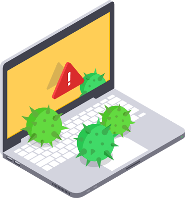
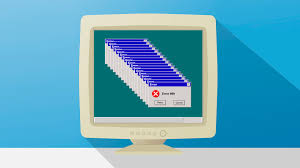
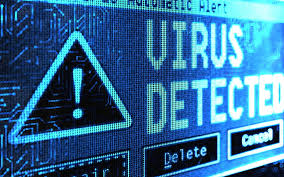
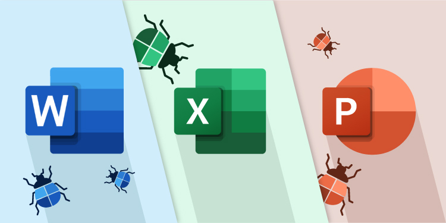
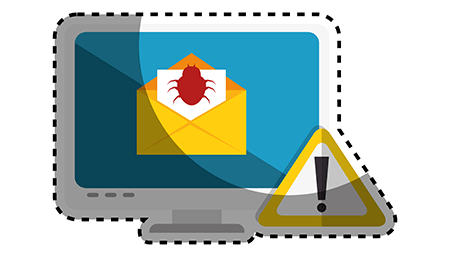
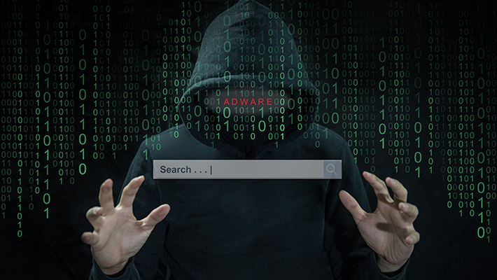

¿Qué es un virus informático?La definición y los 3 tipos principales |
Un virus informático es un software malicioso ejecutable o un código que se auto reproduce al
tomar control sobre otros programas en un ordenador infectado. Diseñados para esparcirse desde
un equipo host hacia otros ordenadores, el virus informático se agrega a un componente del
software o a un documento y se queda allí hasta que el usuario abre el archivo en cuestión.
Cuando esto pasa, el virus empezará a ejecutar su código y causará daños en el ordenador host.
Hay muchas maneras de contraer un virus informático, con la descarga de archivos, adjuntos de
emails, instalación de software comprometido, o enlaces basura en las redes sociales. Usted
puede esparcir el virus si comparte los archivos o los enlaces infectados con otros. Si su
ordenador forma parte de una red, con que un solo usuario abra el archivo peligroso en su escritorio,
puede ser suficiente para que toda la red se comprometa.
Aunque es cierto que ha habido virus “buenos” con efectos positivos sobre los equipos host, los virus
informáticos son malos por definición. Cuando se ejecutan, pueden enviar correo no deseado a sus contactos
del email y redes sociales, pueden corromper archivos de su disco duro y ralentizar su ordenador. Los virus
pueden robarle las contraseñas y cambiarle los datos de registro para que no pueda acceder a sus cuentas de
emails o perfiles de redes sociales, cuentas bancarias online o incluso su ordenador. En el peor de los casos,
pueden borrar todos los datos de su disco duro en cuestión de segundos.
|  |  |  |
Hay más de un millón de virus en el mundo, y muchos más se crean cada día. Evolucionan muy rápido, así los que una vez fueron considerados extremadamente peligrosos, hoy en día se sofocan de forma rutinaria con el mejor software antivirus. Basados en la severidad y en la forma de la que pueden afectar su equipo, hay alrededor de una docena de tipos de virus. Aquí están los cinco peores tipos de virus de computadora que debería conocer.
1.Macro Virus
Probablemente sea el tipo más común de virus informático, los macro virus se adjuntan a los archivos
creados en programas que soportan macros, secuencias de órdenes que se pueden ejecutar simplemente al
apretar una tecla. Estos virus se encuentran con más frecuencia en los documentos de Microsoft Word y
hojas de cálculo de Excel. |
 |
2.Virus de Archivo
Mientras que los macro virus normalmente infectan archivos creados en Microsoft Office, los virus de archivo
se adjuntan a los archivos ejecutables con extensiones .exe y .com. Cuando abre un archivo infectado para
iniciar un programa, inconscientemente iniciará el virus también. El virus puede tomar el control del programa
y expandirse hacia otros archivos ejecutables en su disco duro o su red de ordenadores. |
 |
3.Secuestradores del Navegador
Tal y como su nombre indica, los secuestradores del navegador toman el control sobre ciertos componentes
de su explorador de internet. Normalmente cambian su página de inicio por algún explorador falso y sobrescriben
los ajustes para que usted no los pueda cambiar. Cuando usted introduce una dirección y presiona Intro, el virus
le llevará a una página web totalmente diferente y le pedirá que haga click en un anuncio o que se registre para
cualquier cosa para acceder a la página que quiere ver. |
 |